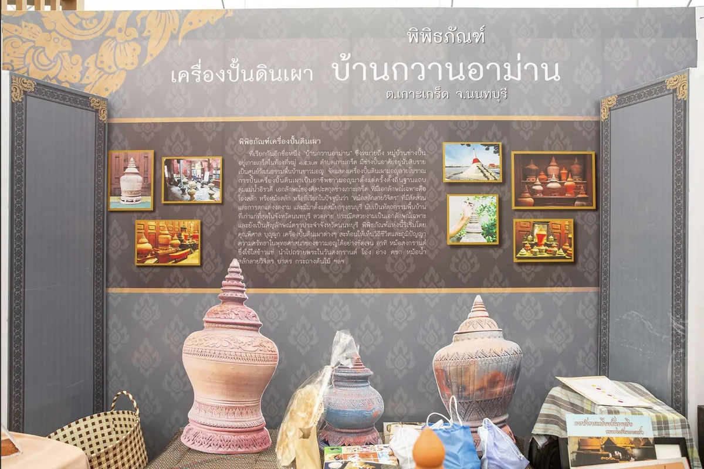
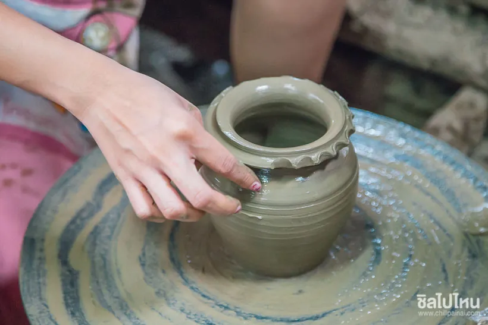

ชุมชน
หมู่บ้านเครื่องปั้นดินเผาเกาะเกร็ด (กวานอาม่าน)
สีน้ำตาลของแบรนด์นี้มาจากที่นี่ ดินเผาที่ยังไม่เคลือบในหมู่บ้านกวานอาม่าน ที่คนยังปั้นและเผากันอยู่จริง ไม่ได้ทำไว้ให้ถ่ายรูป

สรุปให้ก่อน
- ค่าเข้า
- ไม่เสียค่าเข้าซื้อของได้ตามร้านในหมู่บ้าน
- เวลาเปิด
- ช่วงกลางวันบางร้านปิดวันธรรมดา
- พิกัด
- ฝั่งเหนือของเกาะเดินจากท่าเรือราว 10–15 นาที
- ใช้เวลา
- ราว 30–60 นาทีสายถึงบ่ายอ่อนกำลังดี
"กวานอาม่าน" เป็นภาษามอญ หมายถึงหมู่บ้านช่างปั้นหม้อ ซึ่งตรงตัวกับสิ่งที่ยังเกิดขึ้นที่นี่ทุกวัน
ที่นี่ต่างจากร้านของฝากยังไง
ของที่ขายในหมู่บ้านหลายชิ้นปั้นและเผากันในบริเวณเดียวกันนั้น ไม่ได้สั่งมาจากที่อื่น เดินเข้าไปลึกหน่อยจะเห็นเตาเผาอิฐก้อนใหญ่ และกองดินที่รอขึ้นรูปอยู่ข้าง ๆ
ลายที่เป็นเอกลักษณ์ของเครื่องปั้นเกาะเกร็ดคือลายฉลุบนผิวดินเผาที่ไม่เคลือบ ทำให้เห็นเนื้อดินจริง ๆ สีน้ำตาลอมแดงแบบที่หาไม่ได้จากงานเคลือบ

ควรทำอะไรบ้าง
- เดินดูรอบ ๆ ก่อนซื้อ แต่ละร้านลายไม่เหมือนกัน
- ถามก่อนถ่ายถ้าจะถ่ายคนหรือถ่ายในพื้นที่ทำงานของเขา
- ของชิ้นใหญ่แตกง่ายและหนัก ถ้าจะซื้อเก็บไว้ซื้อรอบขากลับ
ห่อของให้ดีก่อนลงเรือ
ทางเดินบนเกาะไม่เรียบทุกช่วง และเรือข้ามฟากค่อนข้างโยก ถ้าซื้อของดินเผาชิ้นบาง ขอให้ร้านห่อกันกระแทกให้แน่นก่อน
ข้อมูลชุดนี้ยังเป็นตัวอย่าง ราคาและเวลาต้องไปเช็กของจริงที่เกาะเกร็ดก่อนเผยแพร่